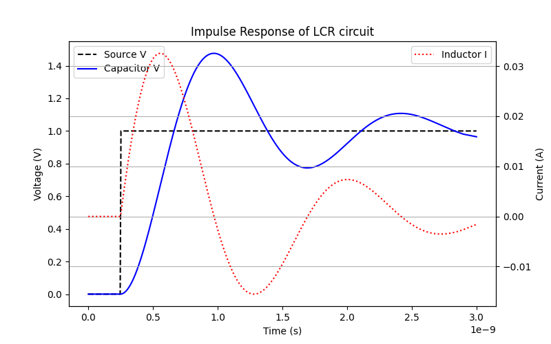

Circulax¤

A Differentiable, Functional Circuit Simulator based on JAX¤
Circulax is a differentiable circuit simulation framework built on JAX, Optimistix and Diffrax. It treats circuit netlists as systems of Ordinary Differential Equations (ODEs), leveraging Diffrax's suite of numerical solvers for transient analysis.
By using JAX as its backend, circulax provides:
Native Differentiation: Full support for forward and reverse-mode automatic differentiation through the solver, enabling gradient-based parameter optimization and inverse design.
Hardware Acceleration: Seamless execution on CPU, GPU, and TPU without code changes.
Mixed-Domain Support: Native complex-number handling for simultaneous simulation of electronic and photonic components.
Modular Architecture: A functional approach to simulation that integrates directly into machine learning and scientific computing workflows.
Standard tools (SPICE, Spectre, Ngspice) rely on established matrix stamping methods and CPU-bound sparse solvers. circulax leverages the JAX ecosystem to offer specific advantages in optimization and hardware utilization:
| Feature | Legacy(SPICE) | circulax |
|---|---|---|
| Model Definition | Hardcoded C++ / Verilog-A | Simple python functions |
| Derivatives | Hardcoded (C) or Compiler-Generated (Verilog-A) | Automatic Differentiation (AD) |
| Solver Logic | Fixed-step or heuristic-based | Adaptive ODE stepping via Diffrax |
| Matrix Solver | Monolithic CPU Sparse (KLU) | Pluggable (KLUJAX, Dense, or Custom) |
| Hardware Target | CPU-bound | Agnostic (CPU/GPU/TPU) |
Simulator setup¤
circulax strictly separates Physics, Topology, and Analysis, enabling the interchange of solvers or models without netlist modification.
Physics Layer¤
Components are defined as simple Python functions wrapped with the @component decorator. This functional interface abstracts away the boilerplate, allowing users to define physics using simple voltage/current/field/flux relationships.
from circulax.base_component import component, Signals, States
import jax.numpy as jnp
@component(ports=("p1", "p2"))
def Resistor(signals: Signals, s: States, R: float = 1e3):
"""Ohm's Law: I = V/R"""
# signals.p1, signals.p2 are the nodal voltages
i = (signals.p1 - signals.p2) / R
# Return (Currents, Charges)
return {"p1": i, "p2": -i}, {}
@component(ports=("p1", "p2"))
def Capacitor(signals: Signals, s: States, C: float = 1e-12):
"""
Q = C * V.
Returns Charge (q) so the solver computes I = dq/dt.
"""
v_drop = signals.p1 - signals.p2
q_val = C * v_drop
return {}, {"p1": q_val, "p2": -q_val}
Topology¤
The compiler inspects your netlist and your model signatures. It automatically:
-
Introspects models to determine how many internal variables (currents) they need.
-
Allocates indices in the global state vector.
-
Pre-calculates the Sparse Matrix indices (BCOO format) for batched/parallel assembly.
netlist = [
Instance("V1", voltage_source, connections=[1, 0], params={"V": 5.0}),
Instance("R1", resistor, connections=[1, 2], params={"R": 100.0}),
]
# Compiler auto-detects that V1 needs an extra internal variable!
Analysis¤
The solver is a generic DAE engine linking Diffrax (Time-stepping) and Optimistix (Root-finding).
-
Transient: Solves \(F(y) + \frac{d}{dt}Q(y) = 0\) using Implicit Backward Euler (or any other solver compatible with Diffrax).
-
DC Operating Point: Solves \(F(y) = 0\) (automatically ignoring \(Q\)).
-
Jacobian-Free: The solver builds the system Jacobian on-the-fly using
jax.jacfwdallowing for the simulation of arbitrary user-defined non-linearities without manual derivative derivation.The approach results in a more exact and stable simulation.
Installation¤
Simulation Example¤
import jax
import jax.numpy as jnp
from circulax.components import Resistor, Capacitor, Inductor, VoltageSource
from circulax.compiler import compile_netlist
import matplotlib.pyplot as plt
jax.config.update("jax_enable_x64", True)
net_dict = {
"instances": {
"GND": {"component":"ground"},
"V1": {"component":"source_voltage", "settings":{"V": 1.0,"delay":0.25E-9}},
"R1": {"component":"resistor", "settings":{"R": 10.0}},
"C1": {"component":"capacitor", "settings":{"C": 1e-11}},
"L1": {"component":"inductor", "settings":{"L": 5e-9}},
},
"connections": {
"GND,p1": ("V1,p2", "C1,p2"),
"V1,p1": "R1,p1",
"R1,p2": "L1,p1",
"L1,p2": "C1,p1",
},
}
models_map = {
'resistor': Resistor,
'capacitor': Capacitor,
'inductor': Inductor,
'source_voltage': VoltageSource,
'ground': lambda: 0
}
# Analyze Circuit
groups, sys_size, port_map = compile_netlist(net_dict, models_map)
linear_strat = analyze_circuit(groups, sys_size, is_complex=False)
# Solve DC
y_guess = jnp.zeros(sys_size)
y_op = linear_strat.solve_dc(groups,y_guess)
# Setup Sim
transient_sim = setup_transient(groups=groups, linear_strategy=linear_strat)
term = diffrax.ODETerm(lambda t, y, args: jnp.zeros_like(y))
# Run simulation
t_max = 3E-9
saveat = diffrax.SaveAt(ts=jnp.linspace(0, t_max, 500))
sol = transient_sim(
t0=0.0, t1=t_max, dt0=1e-3*t_max,
y0=y_op,
saveat=saveat, max_steps=100000,
progress_meter=diffrax.TqdmProgressMeter(refresh_steps=100)
)
# Post processing and plotting
ts = sol.ts
v_src = sol.ys[:, port_map["V1,p1"]]
v_cap = sol.ys[:, port_map["C1,p1"]]
i_ind = sol.ys[:, 5]
fig, ax1 = plt.subplots(figsize=(8, 5))
ax1.plot(ts, v_src, 'k--', label='Source V')
ax1.plot(ts, v_cap, 'b-', label='Capacitor V')
ax1.set_xlabel('Time (s)')
ax1.set_ylabel('Voltage (V)')
ax1.legend(loc='upper left')
ax2 = ax1.twinx()
ax2.plot(ts, i_ind, 'r:', label='Inductor I')
ax2.set_ylabel('Current (A)')
ax2.legend(loc='upper right')
ax2_ticks = ax2.get_yticks()
ax1_ticks = ax1.get_yticks()
ax2.set_yticks(jnp.linspace(ax2_ticks[0], ax2_ticks[-1], len(ax1_ticks)))
ax1.set_yticks(jnp.linspace(ax1_ticks[0], ax1_ticks[-1], len(ax1_ticks)))
plt.title("Impulse Response of LCR circuit")
plt.grid(True)
plt.show()

License¤
Copyright © 2026, Chris Daunt, Apache-2.0 License